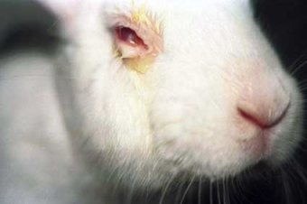
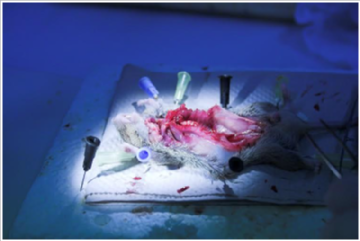
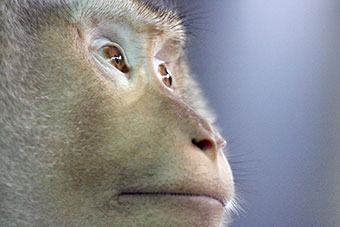
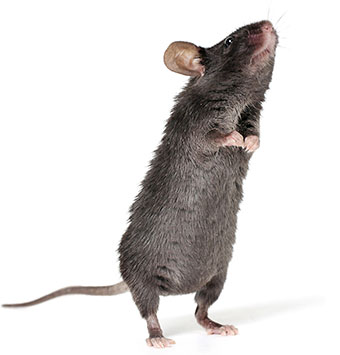

Vivissecção: por que nunca pode estar certo
Vivissecção é a prática de experimentação animal. Isso pode incluir a administração de drogas,
infecção por
doenças, envenenamento para testes de toxicidade, danos cerebrais, mutilação, cegueira e outros
procedimentos dolorosos e invasivos. Pode incluir, e muitas vezes inclui, protocolos que causam
sofrimento severo, como isolamento social de longo prazo, contenção de corpo inteiro, choques
elétricos,
retenção de comida e água ou reprodução e separação repetidas de bebês de mães.
|  |
Todas as formas de experimentação animal são baseadas em um ideal injusto: a
consideração
desigual dos interesses e desejos dos animais não humanos envolvidos. Como
defensores
dos direitos dos animais, nos opomos à vivissecção por motivos éticos,
acreditando que é
moralmente errado prejudicar uma espécie para o suposto benefício de outra.
Encorajamos
nossos apoiadores a estender o círculo de compaixão para incluir todos os
animais vivos
– humanos e não humanos. |
| Vivissecção é uma caricatura globale nenhum país opera isoladamente de outro. A
indústria
de
pesquisa animal está se espalhando rápida e efetivamente em todo o mundo,
particularmente para países em desenvolvimento, e deve ser enfrentada de frente
usando
uma abordagem multifacetada. Apesar dessa indústria abominável estar envolta em
um
espesso manto de sigilo, protegida por governos e pela indústria farmacêutica
(com
interesse em sua continuação), investigações secretas em laboratórios e fazendas
de
criação conseguiram trazer à luz a extensão da exploração animal nessas áreas.
locais. O
público tornou-se cada vez mais consciente da situação dos animais em
laboratórios. |
A sociedade seria contra a experimentação em humanos contra sua vontade mesmo que isso levasse a
grandes
avanços na busca de vacinas e curas. Para animais de diferentes espécies, Este não é o caso. No
entanto,
assim como nós, muitos são sencientes, com emoções semelhantes às nossas. Suas vidas importam
para eles,
assim como nossas vidas importam para nós.
|  |
A cada ano, milhões de animais são usados por pesquisadores como commodities em
laboratórios. Esses animais sofrem e morrem em experimentos que não são apenas
inerentemente errados, mas também simplesmente não são confiáveis. A vivissecção
é
saudada por seus proponentes como sendo “essencial” para o progresso médico, mas
a
grande maioria dos experimentos com animais é realizada em pesquisas
“fundamentais” ou
motivadas pela curiosidade. Estes são enganosos e, de fato, demonstraram impedir
o
progresso médico. |
| Muitas espécies diferentes de animais são usadas como ferramentas pelos
pesquisadores,
incluindo ratos, camundongos, coelhos, porquinhos-da-índia, hamsters, gatos,
cães,
primatas, pássaros, peixes, bem como “animais de criação”, como porcos, vacas e
cabras.
Os experimentadores frequentemente afirmam que os animais não humanos são usados
para
pesquisa por causa de suas semelhanças com os humanos. No entanto, pela mesma
lógica,
suas semelhanças tornariam abominável usá-los na pesquisa de drogas.
Independentemente
das semelhanças entre as espécies, no entanto, criar outros animais para nosso
próprio
uso é simplesmente errado. Todos os animais sencientes merecem e têm direito a
igual
consideração. |
Animais infelizes o suficiente para nascer e serem criados na indústria da pesquisa científica
sofrem
enormemente, tanto física quanto psicologicamente. Mesmo aqueles não submetidos a procedimentos
vivenciam confinamento, isolamento, tédio, desamparo, depressão, ansiedade e frustração. Eles
têm pouco
controle sobre suas próprias vidas. Eles nasceram para morrer, muitos dos quais nunca sentiram o
ar
fresco em seus rostos ou experimentaram a vida como deveria ser. O laboratório é tudo menos um
ambiente
natural. Do nascimento à morte, o sofrimento é inerente à vida em laboratório.
- Uso de animais em massa e institucionalizado
O Reino Unido é um dos maiores usuários de animais em experimentos no mundo, particularmente animais
geneticamente modificados, mas a legislação atual na Grã-Bretanha também o torna um dos mais
secretos.
As últimas estatísticas do Home Office revelam que, em 2014, 3,87 milhões de experimentos foram
concluídos. Globalmente, os números são difíceis de estimar, pois há uma variabilidade nos
relatórios de
experimentos com animais e muitos países não publicam números. No entanto, um relatório em 2008
estimou
que durante 2005, aproximadamente 115,3 milhões de animais poderiam ter sido usados para
experimentação animal em todo o mundo.
|  |
Atualmente, o uso de animais está inserido na metodologia de pesquisa médica. A
vivissecção
tornou-se uma forma institucionalizada de abuso de animais, aceita pela
sociedade
principalmente porque tem sido tão comumente argumentada que desempenhou um
papel vital
em quase todos os avanços médicos históricos. Pesquisadores e defensores da
vivissecção
defendem que a pesquisa com animais continua sendo essencial para o avanço da
pesquisa
médica. |
| A falta de vontade de “quebrar” a “norma”, o puro hábito e o desejo de obter
financiamento
para seu trabalho e progresso na área médica leva os pesquisadores a continuar
como seus
antecessores fizeram. A repetição constante dos mesmos experimentos, ou
ligeiramente
variados, significa que milhares e milhares de animais morrem. Em alguns casos,
a lei
exige vivissecção. Na Europa, Estados Unidos,Animal Justice Project sustenta que
só
porque a pesquisa foi feita no passado em animais, isso não significa que a
pesquisa com
animais deva ser realizada, nem é justificável moral ou cientificamente. |
- Libertação animal
|  |
Estender o círculo de compaixão além da humanidade exige uma ruptura com o
pensamento
tradicional, que sustenta que os animais existem para os humanos usarem. Em um
mundo que
é amplamente antropocêntrico, a ideia de compaixão, respeito e justiça por todos
os
animais é muitas vezes desconsiderada como sentimentalismo. Outras espécies são
usadas
livremente pelo homem para alimentação, vestuário, entretenimento e ferramentas
de
pesquisa. |
| Animal Justice Project acredita que os animais não humanos não devem ser vistos
meramente
como recursos, mas como companheiros terráqueos – cada um entrelaçado e com
sentidos que
são únicos para eles, e cada um com um lugar especial na teia da vida. O direito
de
entrar no círculo da compaixão não pode ser medido por habilidades mentais,
físicas ou
emocionais. |
| Como seres humanos, temos a liberdade de fazer escolhas que têm efeitos imensos na
vida de
outros animais. Com essa liberdade vem a obrigação moral de tomar decisões
responsáveis.
Já foi dito que o progresso moral de nossa sociedade pode ser medido pela forma
como
trata os animais. A experimentação animal – uma forma institucionalizada de
exploração –
impede o progresso moral. Agora é a hora de estender nossa esfera de preocupação
ética a
todos os outros animais. |
Voltar ao inicio
Copyright © Animal Justice Project